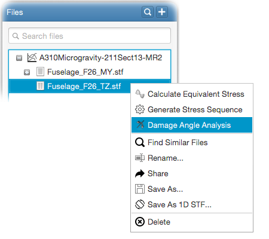

Damage angle analysis is performed to obtain the maximum damaging angle for 2D stress states. At the end of the analysis, maximum damaging
angle (in degrees) and the related equivalent stress value are computed. In addition, all incremental angles with their equivalent stresses
are also displayed from within the Equinox UI. Following video demonstrates how to do this.
For this, right-click on a 2D STF file in the file tree and select
Damage Angle Analysis from the popup menu as follows;

This will open the damage angle analysis input panel. Input panel contains all necessary input fields in order to perform the analysis.
These are; stress sequence generation parameters, material data, rainflow omission parameters, iteration settings and post-processing options.
You can find detailed information on the first 3 input panels from the following links;
Overall iteration parameters govern damage angle analysis iteration cycle;
Angle range: Select the start and end angles in degrees. Analysis will be performed within this range.
Increment angle: The angle in degrees for rotating the stresses in each iteration step. Stress sequence will be generated
for each incremental angle within the given angle range calculated by the given increment angle.
You can keep the generated stress sequence for the maximum damaging equivalent stress of your choice. The stress sequence will be kept in the database.